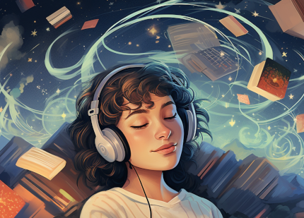

AUDIOBOOK

Just a bit of background!
An audiobook is a type of electronic book that is listened to rather than read in the traditional sense. Audiobooks have been around for a long time, even before e-books became available. Its history can be traced back to Thomas Edison's invention of the phonograph in 1877. Recorded books were initially created to offer an alternative reading format for people who have difficulty reading printed books due to poor eyesight, illiteracy, or dyslexia.
However, with the rise of digital media, audiobooks are no longer considered as a by-product of printed books. If the sales figures for the printed book are significant, the audiobook is often recorded after the book has been printed.
Today, the audiobook market has become so big that audiobooks are now published simultaneously
with both the printed and the e-book versions.
This creates flexibility in reading choices
from the moment of publication. Moreover, the digital audiobook appeals to a much broader group
of consumers than before, making it accessible to everyone.
Our bedtime stories in a modern wrapping
Using audiobooks as a sleep aid may unconsciously evoke memories and recretae the feeling of our childhood bedtime stories, providing a calming atmosphere that prepares us mentally and physically for sleep.
The comforting feeling of snuggling up with parents, grandparents, caregivers, or siblings for an adventure or story time before drifting off to sleep is an ideal image that every child should experience.
The Voice
The narrator's voice can play a crucial role in helping listeners relax while listening to an audiobook. People have different preferences when it comes to finding a calming voice. Publishers also make an effort to match the voice with the story's tone, atmosphere, and style. Sam Halstead, the editorial director for Penguin Random House Audio, described as:
What are your options?
If you are interested in listening to audiobooks, there are various options available to choose from. Some of them are free while others require a reasonable monthly fee.
- I. Audible:
- • Audible is a service offered by Amazon that provides audiobooks, and while it is not a site for
free audiobooks, it does offer some audiobooks for free online. If you have a subscription, you can
get one Audible original story every month, which you can keep even if you cancel your subscription.
You can also try a free 30-day trial of Audible Premium Plus to see if you like it.
- • Audible include the largest and most up-to-date collection of new releases, the ability to sync audiobook narration to your reading progress on a Kindle.
Go to Audible! - • Audible include the largest and most up-to-date collection of new releases, the ability to sync audiobook narration to your reading progress on a Kindle.
- II. LibriVox:
- • LibriVox is a website where volunteers from around the world record classic books that are in the
public domain, making them available for listeners to enjoy. It offers popular classics along with
lesser-known titles for the browser. The available audiobooks are also easily downloadable onto any
mobile device, computer, or iPod.
- • LibriVox has an extensive collection of over 10,000 projects, and you can also lend your voice to this great cause by becoming a volunteer. You can read short works, an actor’s part in a play, a book chapter, or even record an entire book’s worth of audio. The finished project will also be released into the public domain.
Go to LibriVox! - • LibriVox has an extensive collection of over 10,000 projects, and you can also lend your voice to this great cause by becoming a volunteer. You can read short works, an actor’s part in a play, a book chapter, or even record an entire book’s worth of audio. The finished project will also be released into the public domain.
- III. YouTube:
- • YouTube not only offers a wide variety of free video content but also provides free
audiobooks for its users. You can subscribe to numerous free audiobook channels that cater to
various genres.
- • However, YouTube does not offer an option to listen to audiobooks without playing the video, and you will have to search for specific titles as there is no option to browse through a database.
Go to YouTube! - • However, YouTube does not offer an option to listen to audiobooks without playing the video, and you will have to search for specific titles as there is no option to browse through a database.
How could Audiobooks help to handle insomnia?
Audiobooks could have a significant impact on our mental health. They can help improve our moods and disrupt negative thinking patterns. According to Psychology Today, listening to someone else read can replace negative thoughts with something else, especially for those prone to anxiety and depression.
Moreover, audiobooks help relax our eyes, which is crucial for people who spend most of their time looking at digital screens. Studies show that over seven hours of screen time daily can lead to blurred vision, eye strain, and even long-term vision problems such as near-sightedness. Social media use has also been linked to feelings of loneliness and depression. Therefore, listening to an audiobook can be a great way to put down the phone and unwind.
Additionally, listening to audiobooks can help improve sleep quality. The blue light from screens disrupts our circadian rhythm, making it difficult to fall asleep at night. Audiobooks allow our eyes and mind to relax, which can lead to a good night's sleep.
Finally, audiobooks can transport listeners to another world, making them a powerful tool for escaping daily worries and captivating the imagination. By creating a whole world inside and outside ourselfs, audiobooks allow us to tap into the wonder of storytelling.